地政学
洛陽は河南西部で黄河、洛水、伊水を押さえ、関中、鄭州、華北、南陽盆地を結ぶ中原の結節です。古代王朝の都城配置、隋唐大運河、現代鉄道と高速道路が重なり、山河も現在の内陸中国の重心を示す重要な要素です。
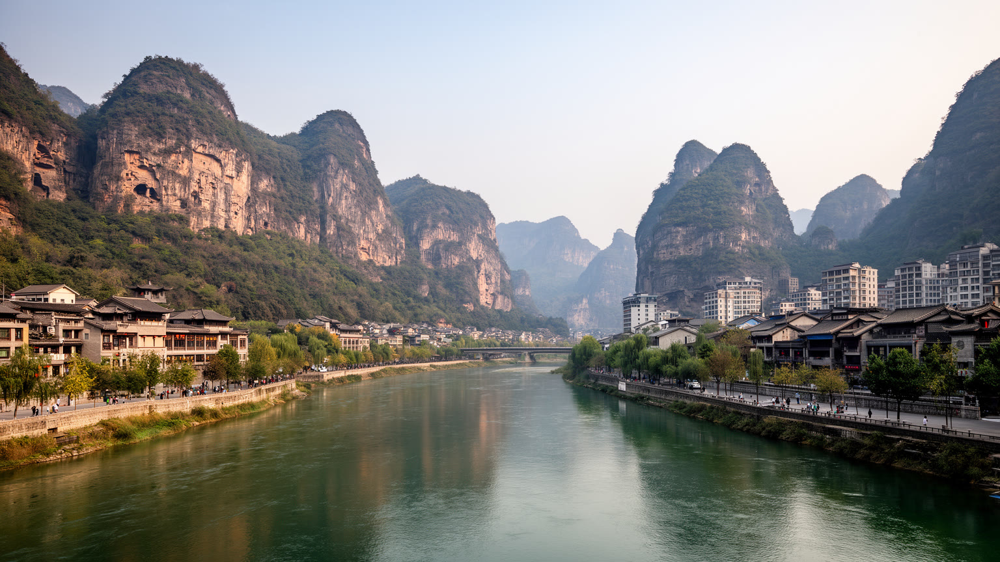
🇨🇳 中国 / 河南省 / World City Atlas
黄河、洛水、伊水のあいだに置かれた中原の古都。龍門石窟、白馬寺、牡丹、河洛文化、装備製造、新材料、観光労働、郊外新区が、長い文明史と今日の生活を結びます。
都市の骨格
洛陽は、古代王朝の都、仏教伝来の記憶、黄河中流の交通、現代の装備製造と新材料産業を同時に抱えます。観光で歩く旧城や石窟の背後に、工場、大学、農村、郊外新区、日々の通勤があります。
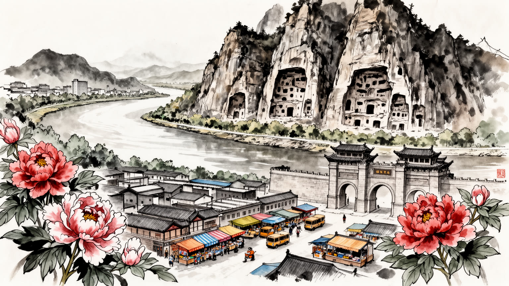
洛陽は河南西部で黄河、洛水、伊水を押さえ、関中、鄭州、華北、南陽盆地を結ぶ中原の結節です。古代王朝の都城配置、隋唐大運河、現代鉄道と高速道路が重なり、山河も現在の内陸中国の重心を示す重要な要素です。
装備製造、非鉄金属、新材料、石油化学、農産加工、観光が都市経済を支えます。研究者や技術者だけでなく、工場の技能職、建設、配達、飲食、宿泊、ガイド、農村からの通勤労働が日常を動かします。層は厚いです。
龍門石窟、白馬寺、隋唐洛陽城、関林、牡丹祭は、仏教、王朝儀礼、民間信仰、文学の記憶を集めます。河洛文化は観光の装飾ではなく、祖先祭祀、寺院参拝、季節行事、食の作法にも残ります。祈りも生活に残ります。
旅行者は石窟、古城、牡丹園、博物館を巡ります。住民には住宅更新、工場の雇用、若者の流出、観光期の混雑、大気と水、郊外通勤が身近です。古都の美しさは普通の暮らしとの距離で測れます。課題も同居します。
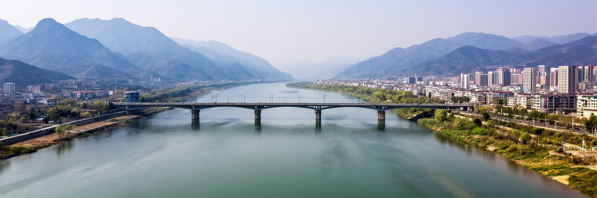
洛陽の地理は、黄河中流の南岸、洛水と伊水の流域、周囲の山地と盆地を合わせて見ると分かりやすくなります。都市は河南西部にあり、東には鄭州と開封、西には三門峡と関中、南には伏牛山系、北には黄河を越えた太行方面が開けます。この位置は古代の都城にとって、農地、軍事、交通、儀礼の条件をそろえる場所でした。洛水沿いの平地は街と農村をつなぎ、伊水沿いには龍門石窟が刻まれ、黄河の流れは広い文明圏を意識させます。現代の洛陽でも、鉄道、高速道路、空港、工業団地、観光地はこの地形に沿って配置されています。山地は鉱物資源、森林、観光、農村の生活を支えますが、同時に水資源、土砂災害、開発制限をもたらします。平野部に都市が伸びるほど、農地や河川敷、古代遺跡との調整が必要になります。洛陽を読むには、古都の中心部だけでなく、黄河、洛河、伊河、山地の村、工業地帯、郊外新区を一つの地形として見る必要があります。河川は景観である前に、取水、排水、洪水、農業、交通記憶を束ねる生活基盤です。乾いた春の風、暑い夏、冬の冷え込みも、この内陸地形の一部として住民の身体に届きます。地理は歴史の背景ではなく、今日の通勤、住宅、産業、観光を決める現実の骨格です。さらに水辺の整備や堤防の管理は、散歩道の快適さだけでなく、工場排水、農地、飲み水の安全とも直結します。
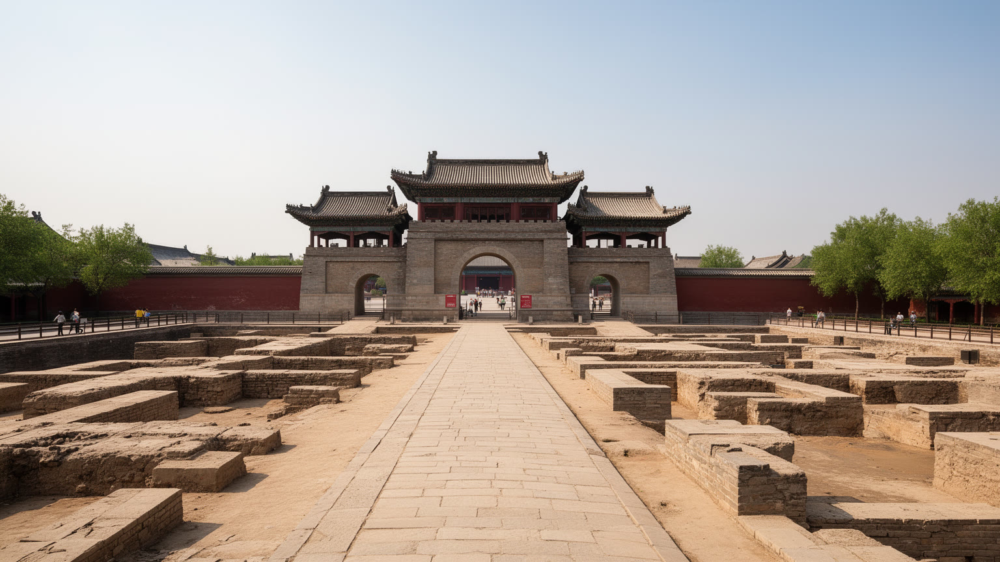
洛陽は、東周、後漢、曹魏、西晋、北魏、隋唐など、長い時代にわたって都城や副都として機能した都市です。王城、漢魏洛陽城、隋唐洛陽城の遺構は、権力が中原の地理をどう使い、宮城、街路、寺院、市場、運河をどう組み合わせたかを示します。ただし、今日の洛陽は過去の都をそのまま保存した空間ではありません。遺跡公園、博物館、住宅地、幹線道路、商業施設、工場、学校が重なり、古代の痕跡は現代都市の土地利用の中で読まれます。都城の記憶は誇りを作りますが、観光向けの演出が強すぎると、そこに暮らしてきた住民の生活や、失われた街区の歴史が見えにくくなります。王朝の物語には、皇帝や文人だけでなく、城を築いた労働者、運河を使った商人、寺院を支えた寄進者、戦乱で移動した民衆も含まれます。洛陽を古都として読むことは、壮麗な中心軸を眺めるだけでなく、権力の移動、都市破壊、再建、土地の記憶を重ねることです。遺跡の保存は開発を遅らせる制約に見える時もありますが、都市の長い時間を可視化する共有財産でもあります。古い都城跡の上を現代のバスや地下鉄が走る時、洛陽では過去と現在が同じ地面を使っています。その重なりがこの都市の厚みです。保存区域の境界、発掘の待機地、住宅補償の判断も、歴史を暮らしの中で扱う難しい実務になります。だから古都の価値は、展示より調整に表れます。
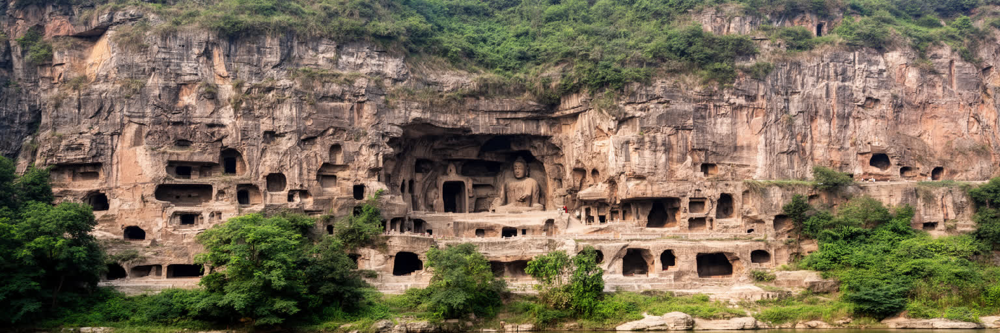
龍門石窟は洛陽を代表する世界的な遺産であり、伊水の両岸に刻まれた仏像、龕、碑文が北魏から唐代にかけての仏教、政治、美術、職人技を伝えます。石窟の魅力は、巨大な盧舎那仏の迫力だけではありません。寄進者の名、造像の表情、衣の線、岩の風化、修復の痕跡には、信仰と国家権力、工房の技術、交通路としての伊水が重なっています。観光客は整備された遊歩道を歩き、ライトアップや解説で遺産に触れますが、その背後には保存科学、監視、清掃、混雑管理、周辺商業、ガイド、交通整理の仕事があります。石窟は開かれた観光資源であるほど、人の接近、湿度、振動、排気、照明が保存に影響します。来訪者を受け入れながら石を守ることは、洛陽の観光政策の核心です。龍門を読む時、仏像を美術作品として見るだけでなく、そこに祈った人、彫った人、壊した人、修復した人、今日の観光労働者まで含めて考える必要があります。伊水の谷にあるため、都市中心部とは少し離れた場所に感じられますが、実際には洛陽の国際的な知名度、ホテル業、交通計画、学校教育を強く左右しています。石に刻まれた静かな表情は、都市の経済と記憶を動かす強い力を持っています。未公開部分や風化した細部は、遺産を完全に所有できないことも示し、保護の慎重さを求めます。石の沈黙を守る仕事も都市の仕事です。
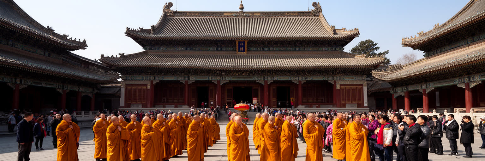
白馬寺は、中国仏教の伝来を象徴する寺院として知られ、洛陽の宗教的な記憶を語るうえで欠かせません。伝承、伽藍、塔、碑、参拝の動線は、仏教が外から来た教えとして受け入れられ、漢字文化、国家儀礼、民間信仰と結びついていった過程を想像させます。現在の白馬寺は観光地でもあり、参拝者、旅行者、僧侶、売店、交通、周辺住民が同じ空間を使います。宗教施設を名所として訪れる時には、写真を撮る視線と、祈りの場としての静けさをどう両立させるかが問われます。洛陽には仏教だけでなく、関林に見られる関羽信仰、祖先祭祀、道教的な習俗、地域の廟会も重なります。宗教文化は、歴史説明の飾りではなく、家族の願い、商売の祈願、季節の行事、地域の結束に関わる生活の一部です。寺院観光が増えれば収入や整備は進みますが、商業化が過度になると信仰の時間が薄くなることもあります。洛陽を宗教都市として読むには、古代仏教の伝来だけでなく、現代の参拝者が何を願い、寺の周囲で誰が働き、地域が寺をどう受け止めているかを見る必要があります。白馬寺は過去の記念碑であると同時に、今も人が手を合わせる場所です。その普通の祈りが、古都の歴史を現在へつなぎます。礼拝の静けさを守る案内、露店の配置、交通整理も、信仰空間を支える都市の作法です。寺の外の食堂や土産物店も、その秩序に関わります。
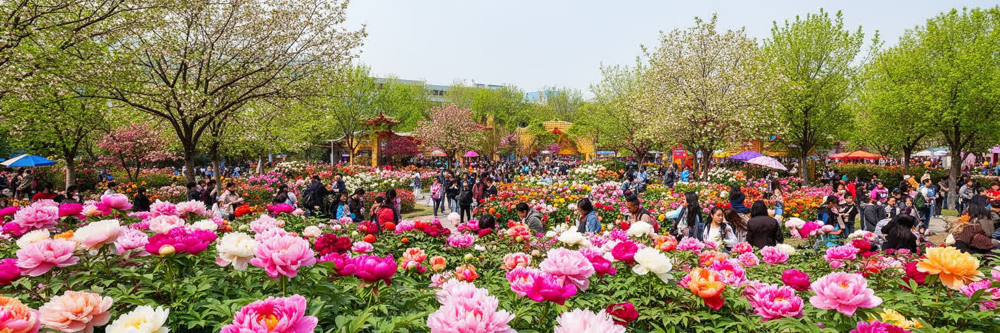
洛陽の牡丹は、都市の季節感と観光経済を結びつける強い象徴です。春になると公園、庭園、道路沿い、土産物、菓子、茶、工芸、広告に牡丹のイメージが広がり、短い開花期に多くの旅行者が集まります。花は華やかな景観を作りますが、その裏側には苗の管理、剪定、温度調整、警備、清掃、臨時交通、宿泊価格、出店、写真撮影の混雑があります。牡丹祭は都市の収入と知名度を高める一方、住民にとっては道路混雑、物価、観光客の集中、公共空間の使い方を調整する時期でもあります。花の名所は美しいほど、維持に多くの労働を必要とします。洛陽の牡丹文化は、唐代以来の詩や宮廷趣味と結びついて語られますが、現代では都市ブランド、園芸産業、観光商品、地域の誇りとして再編されています。花を楽しむ時には、歴史的な美意識だけでなく、栽培技術、天候リスク、庭園で働く人、周辺商店の生活も見たいところです。開花が短いからこそ、都市は一気に混み、収入も一気に動きます。季節観光への依存は魅力であると同時に、天候や景気に左右される弱さでもあります。牡丹は洛陽を柔らかく見せますが、その華やかさの背後には、都市経営の細かな調整と地道な手入れがあります。花の記憶は、古都の時間を春の生活へ引き寄せます。地元の人にとっては、花見の誇りと混雑を受け止める忍耐が同じ季節に訪れます。
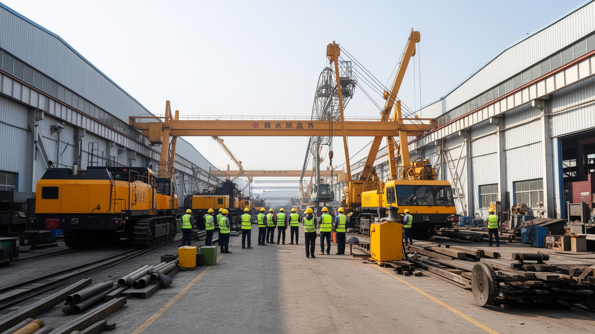
洛陽は観光の古都であると同時に、中部中国の重要な工業都市でもあります。大型機械、軸受、農業機械、鉱山設備、非鉄金属、新材料、石油化学、電子情報などの分野は、都市の雇用と財政を支えてきました。工業都市としての洛陽を理解するには、工場の建物や生産額だけでなく、技能者の訓練、研究所、部品供給、品質管理、労働安全、寮、食堂、通勤バス、退職者の生活まで含めて見る必要があります。重工業は安定した仕事を生む一方、市況の変化、設備更新、環境規制、若者の職業選択に影響されます。観光客が歩く旧市街や石窟からは見えにくい場所で、洛陽の多くの家庭は工場と関係を持ってきました。新材料や高技術製造への転換は、都市に新しい成長をもたらしますが、古い産業労働をどう再教育し、中小企業へどう波及させるかが焦点です。高耗能産業の比重がある都市では、大気、電力、水、廃棄物の管理も生活問題になります。洛陽の産業を読むことは、古代文化の都市が現代の装備と素材を作る都市でもあることを認めることです。観光の華やかさと工場の地道な技能が同居しているからこそ、洛陽の経済は単一の顔に収まりません。製造業の現場は、都市の誇りと社会問題の両方を映します。若い技術者が残るか、熟練工の技能が継承されるかも、工業都市の将来を左右します。研究と現場が離れすぎないことも重要です。
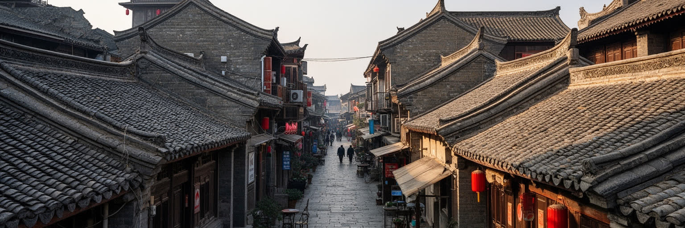
洛陽の旧市街には、城門、路地、市場、寺廟、古風な商業街、集合住宅が重なり、観光客が期待する古都らしさと住民の日常が近い距離にあります。再整備された街区は歩きやすく、夜の照明や飲食店、漢服で写真を撮る若者も増えますが、生活空間としての旧市街は観光の舞台だけではありません。高齢者の買い物、子どもの通学、安い食堂、修理店、朝市、近所づきあいがあり、建物の老朽化、防火、駐車、衛生、家賃の問題もあります。都市更新が進むと、歴史的な景観は整い、観光収入は増えますが、古くからの住民や小さな商いが外へ押し出されることもあります。一方で、改修が遅れれば住環境の安全性は下がります。洛陽の住まいを読むには、古都らしい外観を保存するかどうかだけでなく、誰が中心に住み続けられるか、郊外へ移る人の通勤はどうなるか、公共サービスがどこに届くかを見る必要があります。洛龍区や伊浜方面の新区は、広い道路、新しい住宅、学校、商業施設を備えますが、成熟した近隣関係が生まれるには時間がかかります。旧市街と新区の差は、単なる新旧の景観差ではなく、生活費、通勤、教育、医療、世代間の選択の差でもあります。古都の魅力を守ることは、住民の暮らしを背景へ追いやらない都市更新を考えることです。地下鉄や幹線道路の延伸は便利さを増しますが、移転した世帯の通勤時間も同時に変えます。
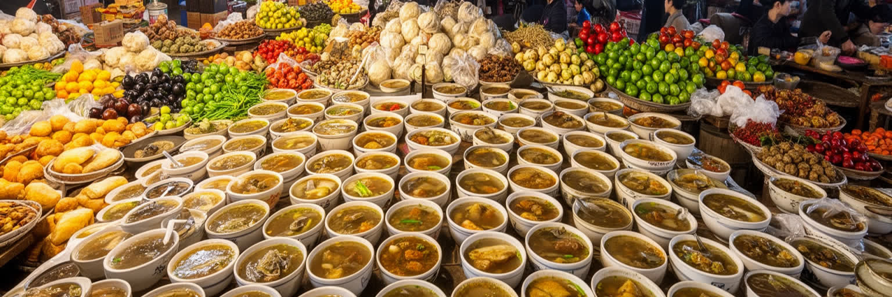
洛陽の日常を知る入口は、名所だけでなく食にもあります。水席、牛肉湯、羊肉湯、胡辣湯、麺、餅、牡丹を使った菓子や茶は、観光客の記憶に残る一方、住民にとっては朝食、昼食、家族の集まり、季節の贈り物として身近です。早朝の湯の店には、仕事前の客、学生、工場へ向かう人、近所の常連が集まり、短い会話と湯気が都市の一日を始めます。市場には小麦粉、野菜、肉、豆製品、果物、乾物、香辛料が並び、周辺農村と都市の台所をつなぎます。観光地の飲食店は分かりやすい名物を並べますが、地元の食文化は、住宅地の小さな店、工場周辺の食堂、学校前の軽食、夜の屋台にも広がっています。食の背後には、早朝の仕込み、衛生管理、食材の流通、家族経営の長時間労働、価格競争があります。観光客が増える通りでは家賃が上がり、昔ながらの店が続けにくくなることもあります。洛陽の食を読むことは、古都の華やかな宴席だけでなく、内陸の小麦文化、寒暖差のある気候、労働者の腹を満たす安い朝食を見ることです。湯の一杯は、歴史都市にも普通の朝があり、その普通さが都市を支えていることを教えます。夜市では串物、甘い飲み物、SNSで広がる店、買い物帰りの家族が混ざります。安い朝食を維持する店は、観光の名物以上に、工場勤務や通学の時間割を支える小さなインフラです。早朝の市場と湯の店を見れば、都市の体温が分かります。
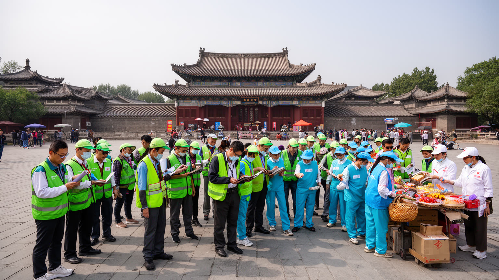
洛陽観光は、龍門石窟、白馬寺、隋唐洛陽城、洛邑古城、関林、博物館、牡丹園を結ぶ強い回遊性を持ちます。観光客が増えるほど、ホテル、飲食、交通、ガイド、清掃、警備、土産物、写真サービス、文化公演、予約管理の仕事が広がります。しかし観光都市の労働は、季節や休日に大きく左右されます。牡丹の季節や大型連休には人手が足りず、閑散期には収入が落ちる仕事もあります。遺産観光では、分かりやすい解説と深い歴史理解を両立させる必要があり、ガイドや展示担当者の力量が都市の印象を左右します。混雑時には、入場予約、駐車場、トイレ、歩行者導線、ゴミ処理、宗教空間への配慮が欠かせません。観光が生活道路や寺院の静けさを圧迫すれば、住民の不満は高まります。洛陽の観光を読むには、名所の数ではなく、遺産を守りながら人を受け入れる管理、そこで働く人の賃金と誇り、住民が暮らし続けられる環境を見る必要があります。華やかな夜景や古風な街並みは、演出だけで成立しません。清掃する人、案内する人、料理を作る人、修復を担う人、交通をさばく人がいて初めて、旅行者は古都を快適に歩けます。観光の価値は、見える遺産と見えにくい労働の両方で作られています。高速鉄道で日帰り客が増えるほど、短時間で混雑を処理する現場の負担も増します。休日の都市運営は、観光政策そのものになります。
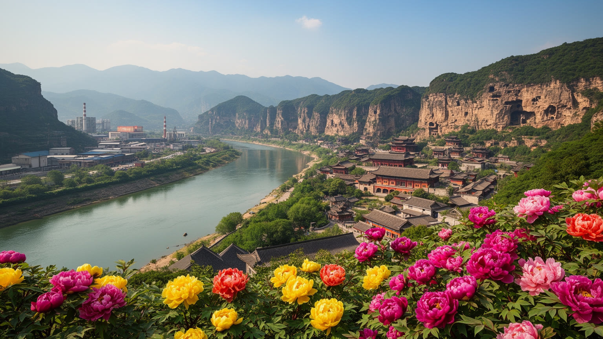
洛陽を世界都市として読む意味は、古代王朝の都だったという一言に閉じません。黄河中流の地理、洛水と伊水、都城遺跡、龍門石窟、白馬寺、牡丹、河洛文化、装備製造、新材料、観光労働、旧市街更新、環境管理が同じ都市圏で重なっています。北京や西安のように国家政治や巨大観光の中心として語られる都市とは違い、洛陽は中原の長い文明史と、河南西部の現代産業都市としての現実を同時に示します。旅行者が見る石窟や古城は強い魅力を持ちますが、その背後には工場へ通う人、朝の湯を出す店、寺に参る家族、郊外新区で暮らす若い世帯、山地の農村、環境規制に向き合う企業があります。公園で太極拳をする高齢者、学校帰りの子ども、バスケットコートの若者、夜市を撮る旅行者も同じ都市の時間です。古都の物語は、ときに過去の栄光を強調しすぎます。しかし洛陽の現在は、保存、観光、製造、住宅、教育、環境をどう釣り合わせるかという動的な課題の中にあります。重要なのは、遺産を飾るだけでなく、そこに住む人の生活と労働を見えるようにすることです。洛陽の力は、長い時間を持つ場所が、現代の内陸都市としてなお変化している点にあります。河川、石窟、寺院、工場、市場、住宅地を一緒に見ると、この都市は中国文明の記憶であると同時に、これからの中原都市の課題を映す場所として立ち上がります。過去を誇るだけでなく、若者が働き、家族が暮らし、遺産が守られる条件を整えられるかが、洛陽の次の価値を決めます。